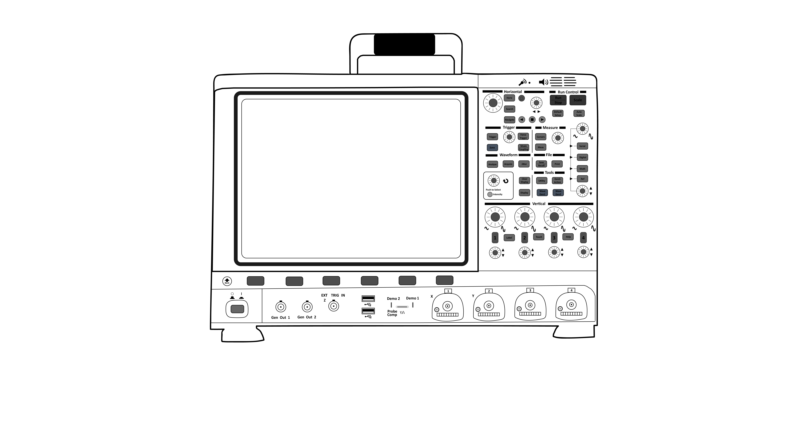
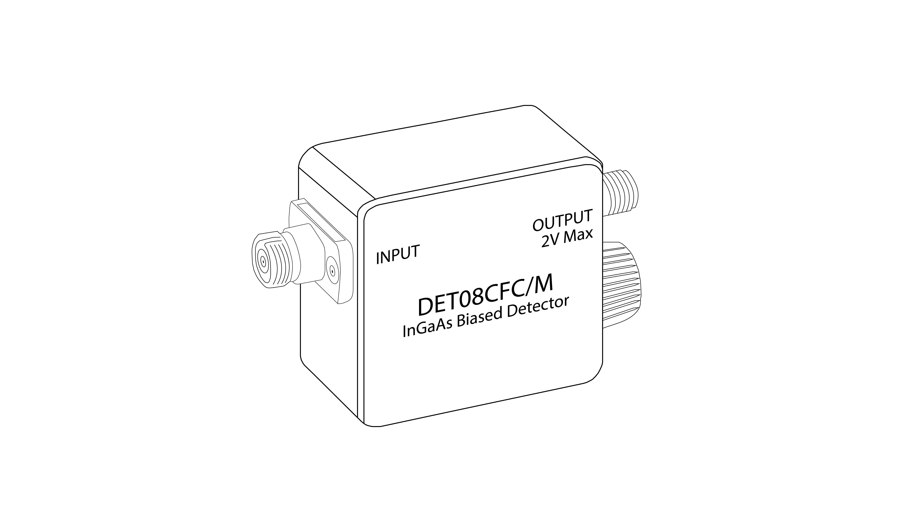
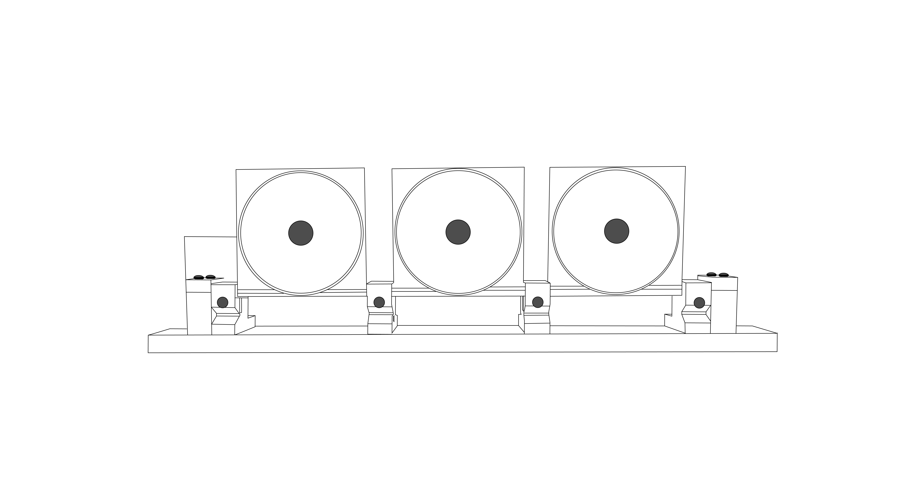
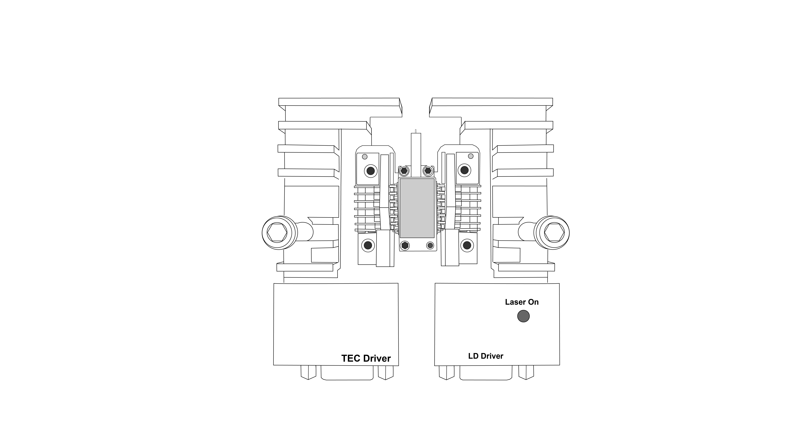
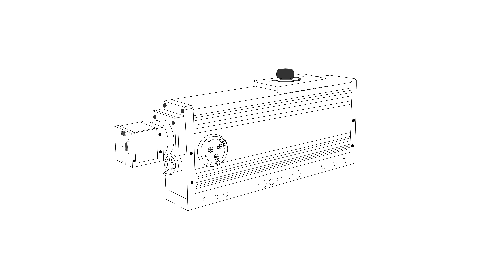
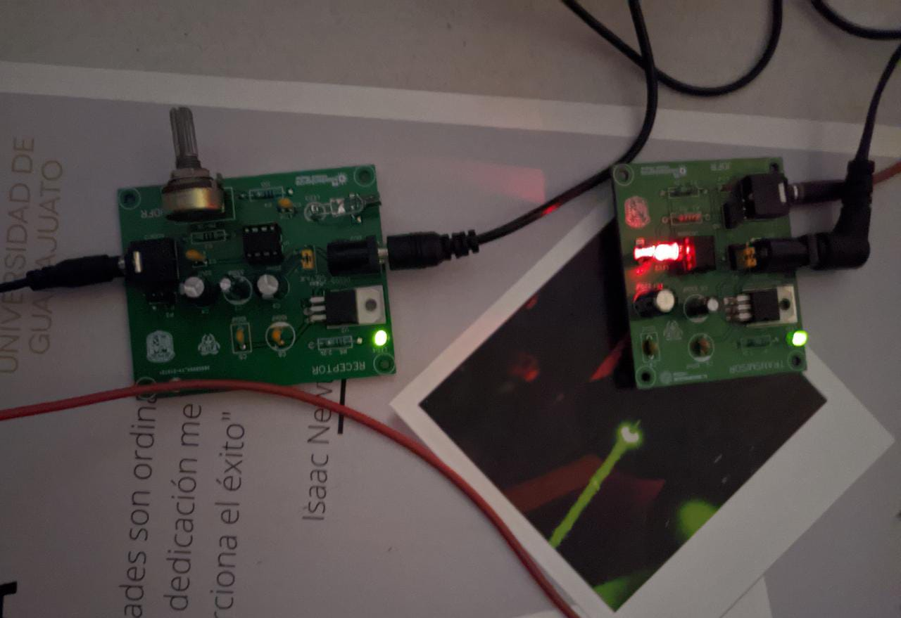
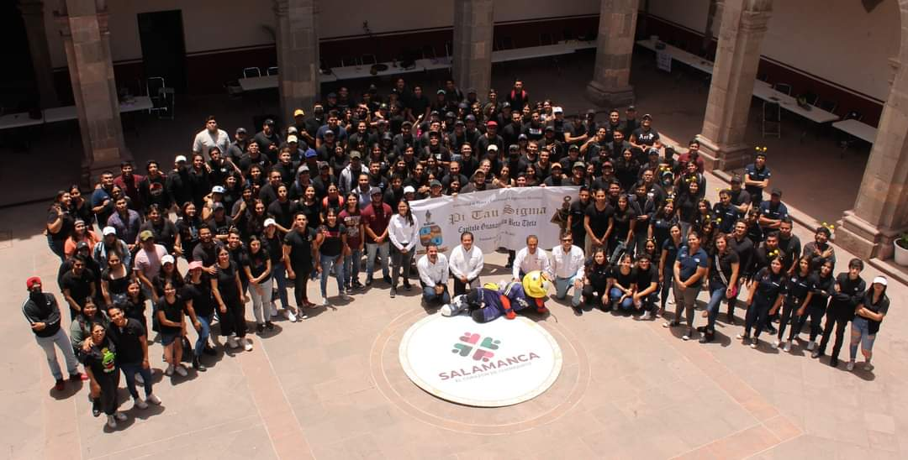

Servicio Social: Reporte de Actividades
Universidad de Guanjuato
Responsable del Laboratorio: Dr Julian Moisés Estudillo Ayala
Estudiante: Diego González Ayala
Servicio Social de Primer Componente
Introducción
El presente documento tiene por objetivo presentar una recopilación de las actividades realizadas durante el transcurso del semestre para el cumplimiento del proyecto de Servicio Social titulado "Apoyo en el ordenamiento y realización de manuales de los laboratorios de Óptica, y de Comunicaciones y Fibras Ópticas", proyecto que cuenta con el Dr. Julian Moisés Estudillo Ayala como responsable.
Diseño de diagramas
En el trancurso de este proyecto de servicio social se diseñaron diversos diagramas para algunos de los dispositivos que se encuentran en los laboratorios de óptica. Los diagramas que se muestran a continuación fueron realizados a partir de dibujos vectoriales en Adobe Illustrator.
1. Diagrama del Osciloscopio Keysight-MSOX6004A
|  |
| Osciloscopio Keysight-MSOX6004A |
2. Diagrama del Fotodetector THORLABS-DET08CFC/M
|  |
| Fotodetector THORLABS-DET08CFC/M |
3. Diagrama de Controlador de Polarización Manual
|  |
| Controlador de Polarización Manual |
4. Diagrama de la Montura THORLABS-LM14S2
|  |
| Montura Mariposa de Diodo Laser THORLABS-LM14S2 |
5. Diagrama del Medidor de Pulsos Swamp Optics-Grenouille
|  |
| Medidor de Pulsos Swamp Optics-Grenouille |
Participación en la 7a Feria de Ciencias E^3 FAIR
El dia 26 de abril del 2023 se llevó a cabo la presentación de un transmisor optoelectrónico de música en la séptima edición de la feria de ciencias para niños "E^3 Fair" con el objetivo de conectar a las nuevas generaciones con el conocimiento sobre la óptica, la electrónica y, en general, la ciencia e ingeniería. El proyecto fue presentado en conjunto con Alejandra Pantoja Martínez, estudiante de Ingeniería en Comunicaciones y Electrónica.
|  |
| Transmisor Optoelectrónico de Música |
|  |
| E^3 Fair - 26/Abril/2023 |
Agradecimientos al proyecto CONACYT 33363